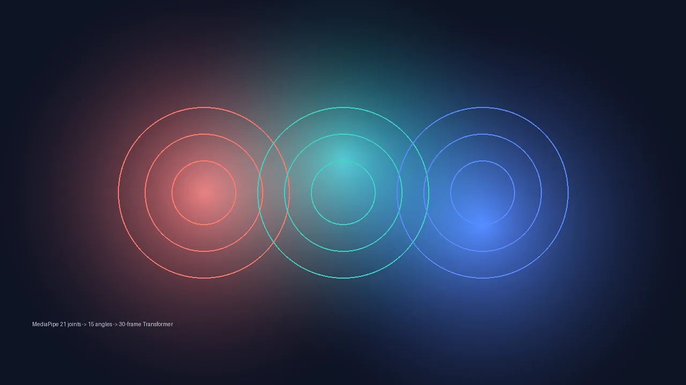
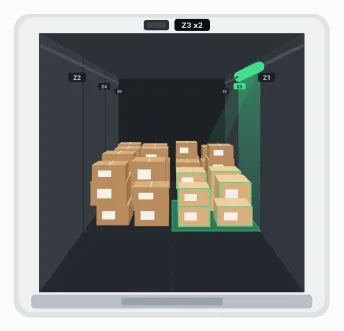
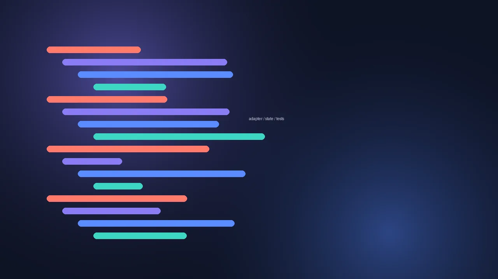
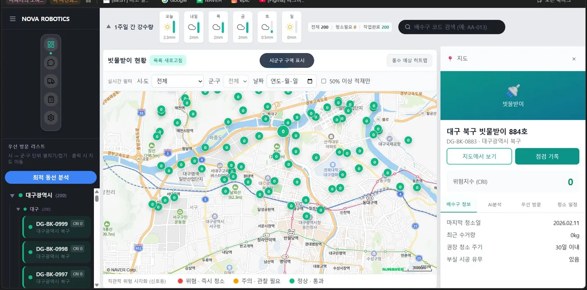
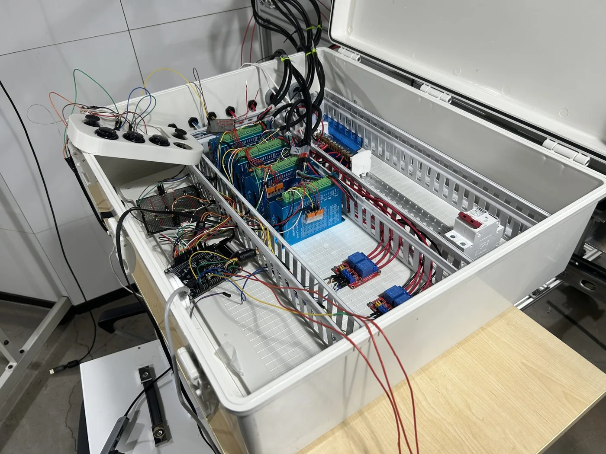
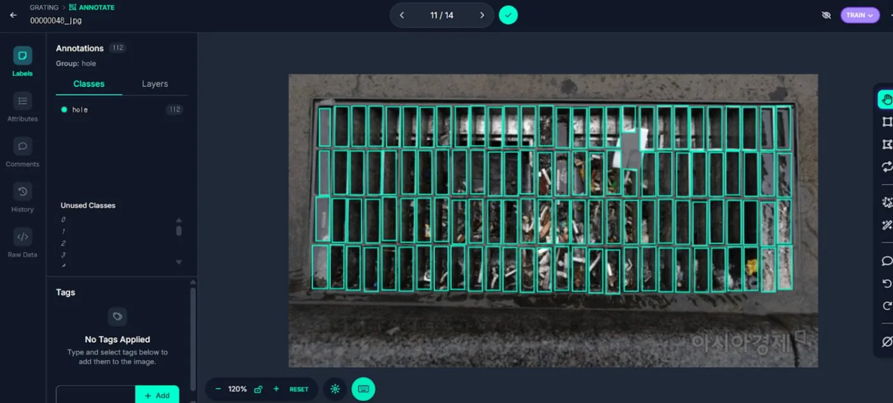

쓰리봇
빗물받이 청소 로봇과 관제 플랫폼. 펌웨어부터 관제 웹까지 한 시스템으로 묶었습니다.
2025.09 ~ 2026.02 · Co-founder · PM
EP.01
카드를 누르면 문제를 어떻게 풀었는지 이어서 볼 수 있습니다.
빗물받이 청소 로봇과 관제 플랫폼. 펌웨어부터 관제 웹까지 한 시스템으로 묶었습니다.
2025.09 ~ 2026.02 · Co-founder · PM
쓰리봇에서 부딪힌 벽을 그대로 설계 요구사항으로 바꾼, 보도를 주행하는 준설 로봇 도면 6장.
2026.09 ~ 10 · 1인 · 기구 설계 · 도면
상세페이지 · A/B 판정 · PPT · 쇼츠 수집을 에이전트 구조로 바꿨습니다.
2025.11 ~ 2026.04 · 1인 · 설계 · 구현
불량률 0.96%인 사출성형 라인에서, 불량 판별 대신 검사 순서를 정하는 모델.
2026.09 ~ 10 · 팀 · 모델 · 검증 설계
선사 할증 공지를 LLM이 읽고, 근거 구절이 원문과 맞을 때만 자동 반영합니다.
2026.09 ~ 10 · 1인
오픈소스 휴머노이드 InMoov의 얼굴 서보 17개로 만드는 AI 면접관.
2026.02 ~ 11 · 한이음 · 기여 90%

MyCobot280 · SO-101에 VLA를 붙인 책상정리 에이전트와 SAM2 생활쓰레기 6종 분할. 제5회 SDGs 소셜벤처 챔피언십 은상.


바뀔 부분은 어댑터로, 늘어날 분기는 상태로. 같은 원칙을 금융 · 게임 · 관제 세 도메인에 썼습니다.
EP.02
증상 → 원인 → 구조 → 기준 → 검증 → 반복 → 기록 → 번역
OPEN 동작 중 바닥 버튼이 CLOSE로 오인식됐습니다. 언제, 어떤 동작에서 나는지부터 적었습니다.
추측으로 고치지 않고 역기전력 → 배선 → 소프트웨어 순서로 하나씩 지웠습니다.
HOME 중에는 WINCH 명령을 NACK로 거절합니다. 충돌을 상태 전이 규칙에서 막았습니다.
할증레이더는 근거 구절이 원문과 일치할 때만 자동 반영합니다.
생산일마다 그 이전 데이터로만 다시 학습해, 10월 불량 25건을 모두 잡았습니다.
릴레이 대책을 넣고 100회 반복 시험에서 오동작 0건을 확인했습니다.
증상 → 원인 → 확인 → 조치 순서로 남깁니다. 실제 버그 3건을 DEVLOG에 재현했습니다.
같은 쓰리봇을 대회 성격에 맞춰 다르게 설명해 9개 대회에서 수상했습니다.
EP.03
14건
대상
2026.10
대상
2025.10
EP.04
콘셉트 · 대사 · 규격은 직접 정하고 이미지는 AI로, CAD 도면은 계산값과 대조해 그렸습니다. 그림을 누르면 크게 볼 수 있습니다.
EP.05
STM32 (C · HAL)ESP32 (FreeRTOS)ArduinoPCA9685UARTBLEMQTT
ROS2 HumbleJetson OrinZED SDKMyCobotSO-101InMoovIsaac Sim
YOLOv8 det/segMobile-SAMSAM2MediaPipeOpenCVRoboflow
PyTorchTensorFlowscikit-learnLightGBMpandaswalk-forward
Claude APIClaude CodeGemini APIWhisperPlaywright
Next.jsReactTypeScriptFastAPIPostgreSQLDockerNCPdeck.gl
ZYXCADAutoLISP회로도 · 하네스FigmaRemotion미드저니
노바로보틱스 공동창업 · 딥테크 예비창업패키지 우수기업
빗물받이 막힘은 민원이 들어오기 전에 먼저 알아야 했습니다
사진 1장에 구멍이 60개가 넘었습니다. 원본 364장만 손으로 라벨링하고, 1차 모델과 Mobile-SAM이 나머지 마스크를 먼저 그리게 한 뒤 사람은 오검출만 고쳤습니다. 데이터셋은 10,000장을 넘었고, 구멍 인스턴스 분할 mAP@50은 87.3%입니다.
main.c 한 파일에 몰린 로직 때문에 HOME · MOVE · WINCH 동작이 충돌했고, 릴레이 두 개가 동시에 켜지면 하드웨어가 파손될 수 있었습니다. 이벤트 기반 FSM과 5계층(main → app → services → drivers → bsp)으로 나누고, HOME 중에는 WINCH 명령을 NACK로 거절합니다. 수락(ACK/NACK)과 완료(DONE/FAIL)는 따로 보냅니다.
OPEN 동작 중 바닥 버튼이 CLOSE로 오인식되는 문제가 매번 났습니다. 역기전력 → 배선 → 소프트웨어 순서로 원인을 좁혀 하드웨어 대책 4가지(페라이트 코어, 전원선 트위스트, 바이패스 커패시터, 신호선 분리 배선)와 소프트웨어 대책 2가지(디바운스 20ms, CLOSE 입력 800ms 마스킹)를 넣었고, 100회 반복 시험에서 오동작 0건이었습니다.
윈치 시동 순간 전압이 2.7V 아래로 떨어져 MCU가 리셋됐습니다. MCU와 모터 전원 분리, 대용량 커패시터, PWM 소프트스타트, MOSFET 스위칭으로 대책을 설계했습니다.
국내 클라우드(NCP)와 방화벽, DB는 127.0.0.1에만 열고 API 서버를 거쳐서만 접근하게 했습니다. 전용 계정에는 필요한 테이블의 CRUD만 줬습니다.
정부지원금 6,100만 원 과제의 서류 · 정산 · 발주 · IR 피칭을 맡았습니다. 같은 기술을 대회 성격에 맞춰 다르게 설명해 9개 대회에서 수상했고, 발표는 직접 했습니다.



펌웨어 GitHub ↗ROS2 GitHub ↗관제 웹 GitHub ↗자세한 사례 ↗
2026 제2회 ZYXCAD AX 경진대회 설계 부문 출품 · 1인
차로를 막지 않고, 덮개부터 바닥 토사까지
사람이 밀어서 정렬하던 것은 보도 자율 주행과 측면 650mm 리치로, 그리퍼를 ±5mm로 넣어야 하던 것은 덮개 면에만 닿으면 되는 EPM(영구 전자석) 패드로 바꿨습니다. 시간으로만 판단하던 하강은 엔코더 액추에이터와 로드셀 접지 감지로, 건식 흡입만 되던 것은 배수 구멍이 있는 클램셸로 바꿨습니다.
덮개 플리퍼의 162° 스윙이 링크의 사점을 지납니다. 피벗 스프로킷과 암 끝 스프로킷을 1:1 체인으로 묶어 패드를 수평으로 유지했습니다.
덮개가 프레임에 30mm 묻혀 있어서 바로 원호로 돌리면 턱에 걸립니다.
EPM은 전원 없이 유지되고, 피벗은 스스로 잠기는 웜 감속입니다.
굴착 중에는 아웃리거를 펴야만 동작하도록 인터록을 걸고, Z 인장을 600N으로 제한했습니다. 링크 궤적과 최소 여유는 Python으로 계산하고 AutoLISP로 CAD 안에서 다시 검사했습니다.
1인 · 2025.11 ~ 2026.04
AI 도구를 써 본 것이 아니라, 반복 작업을 자동화 구조로 바꿨습니다
단일 프롬프트로 전체를 만들게 하면 일관성과 길이가 제멋대로였습니다. 정보수집 → 리서치 → 카피 → 디자인 → 이미지 프롬프트로 역할을 나누고, 중간 산출물은 JSON으로 남겨 단계별로 다시 돌립니다. 쉬운 단계는 Haiku, 품질이 중요한 단계는 Sonnet을 씁니다.
GA4로 3단계 이벤트를 추적하고, 표본 · 노출 · SRM · CVR 차이 기준을 모두 통과할 때만 승자를 선언합니다.
AI가 이미지 안에 그린 "지금 신청하기" 버튼은 그림이라 클릭이 안 됩니다. 이미지는 그대로 두고 % 좌표 기반 CTA 버튼을 위에 얹었습니다.
조회수만 보면 광고성 영상이 위로 올라옵니다. 좋아요 ×3 · 댓글 ×5 · 공유 ×2 · 조회 ×1로 랭킹을 매기고, 선택 이유를 JSON으로 함께 남깁니다.
상세페이지 생성기 ↗A/B 루프 ↗설득형 PPT ↗쇼츠 수집 ↗자세한 사례 ↗
2026 제6회 K-인공지능 제조데이터 분석 경진대회 · 팀
"불량을 맞히지 말고, 검사 순서를 정하자"
불량이 1% 미만이면 검사 시간 대부분이 양품 확인에 쓰입니다. 목표를 "부품별 불량확률 순위로 정밀 · 표준 · 샘플링 검사를 나누는 것"으로 다시 잡고, 평가 지표도 정확도 대신 같은 검사량에서 잡아낸 불량 수로 바꿨습니다. 전부 양품이라고 찍어도 정확도는 99.1%가 나오지만 불량은 하나도 못 잡기 때문입니다.
공정 이상 점수(IsolationForest를 양품 위주의 평소 상태로만 학습), 캐비티 위험도(제품 × 금형 자리별 과거 불량률의 베이지안 평균), 연속불량 상태(직전 5샷의 불량 수와 감쇠 점수)를 로지스틱 회귀로 합쳤습니다. 날짜는 누수를 막으려고 입력에서 뺐습니다.
생산일마다 그 이전 데이터로만 표준화 · 학습 · 기준값을 다시 만드는 walk-forward 방식으로, 10월 데이터에서 검사량 60.3%로 불량 25건을 모두 잡았습니다. 결과 파일은 SEED 42로 3개 환경에서 동일하게 재현됩니다.
2026 해운·항만·물류 AX 혁신 아이디어 공모전 출품 · 1인
근거 구절이 원문과 일치할 때만 자동 반영합니다
① 공지 수집(원문 · URL · 시각 · 해시) → ② LLM 추출(24칸 레코드, 근거 구절은 원문 그대로) → ③ 규칙 검사(근거 원문 일치 · 금액 · 시작일 · 약어 · 지역) → ④ 할증 DB → ⑤ 계산 엔진. 규칙을 통과하면 자동 승인, 아니면 사람이 확인합니다.
정답셋 45건을 직접 만들고 test 레코드 294개를 원문과 전수 대조했습니다. 추출기 3종 중 Sonnet이 280개(95.2%)로, 정규식(8개)과 소형 모델(195개)보다 높았습니다.
기준일 · 최신 공지 대체 · 적용 범위를 규칙 기반 엔진으로 계산하고, 손계산 테스트 16건을 통과시켰습니다.
한이음 ICT 프로젝트 · 서보 얼굴 구동 · 음성 인터랙션 · AI 연동 · 통합
"로봇처럼 보이는 것"보다 "면접관처럼 느껴지는 것"
전신을 다 만들지 않고 눈(시선) · 턱(발화 동기화) · 목(끄덕임) · 눈썹(감정)만 골랐습니다. 면접관 느낌에는 움직임의 정밀도보다 타이밍과 시선이 중요하다고 봤습니다.
상태별 프리셋 모션(listen_pose, nod_small, thinking_pose)을 실행합니다. 프리셋 표정은 13종입니다.
AI 서버(STT → LLM → TTS → 평가)와 로봇 컨트롤러를 Bridge API로 나눠, 텍스트 면접 → 음성 → 실물 로봇 순서로 붙였습니다. 위험이 큰 하드웨어 조립을 마지막에 뒀습니다.
로봇 연결 전 단계로 질문 생성 → 음성 답변 → STT → 분석 → 피드백 → PDF 리포트까지 이어지는 웹 MVP를 혼자 만들었습니다.